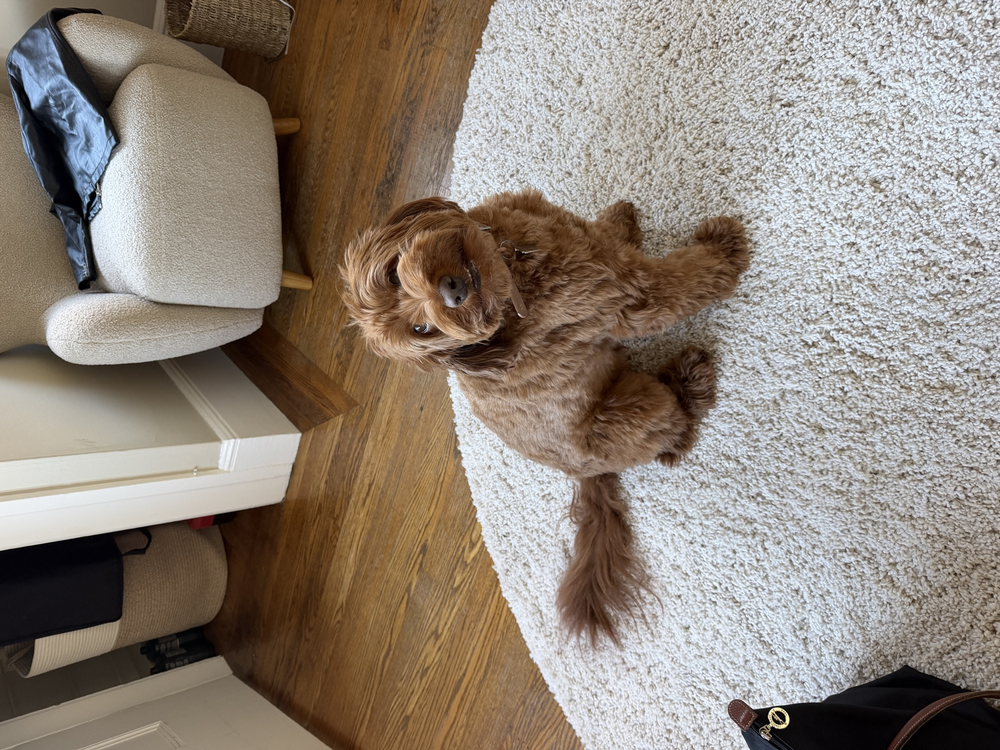

Not This Again

Dear boy,
After further consideration, I don’t want to see you anymore. I am much too insecure to be getting myself into this sort of relationship, and my insecurity comes out as malevolence and I don’t want to hurt you because you don’t deserve that, because you’ve been nothing but kind and sweet. I don’t even know how to answer your questions that you ask because I don’t even want to ask them of myself because who the hell cares about my love language when I can’t even be real to myself about getting the help I so clearly need?
I don’t want to put in the effort it takes to be in a relationship. I don’t care about anything or anyone but myself. I’m sorry I got you involved. I’d rather just end it now than get my heart broken, especially rather than later if things got more serious.
So I’m writing to tell you I’m pulling a whole “it’s not you, it’s me” because you’re too nice for me, and I have no love to give, and I’m grumpy and selfish and abhorrent. I know you’re thinking, “No, you’re not. You just have shit to work through.” But guess what, boy! I don’t want to work through it! I want to be cold and unlovable forever, and never let anyone down, and never get let down again. Not by a lover by a friend by my family by myself. I don’t care if I waste this life away sad and alone, because I’ll just wallow in the comfort and familiarity of dejection, over risking of getting my heart broken again.
I get home from our charming night, and I cry. I write this to you, and then I pity myself. I cry some more, and then I worry if anything will change. I remember that nothing changes until you change yourself, and then I’m back to the bit where I don’t want to change myself. That’s that.
So I’ll bury myself in my work, and play the victim, and keep going the only way I know how. Relationships seem so superfluous. I don’t need it.
But then again, I can only write in my little notebook for so long until it’s just me talking to myself, and I get bored of hearing myself complain. I know that my time for feelings is up, and I have shit to do, and emails to send, and I have to move forward. So I’ll throw this letter away and show up on Saturday on my best behavior, because what else is there to do but keep going?
Whatever. Also I have an intake call for therapy next Wednesday.
With tentative adoration,
Leah